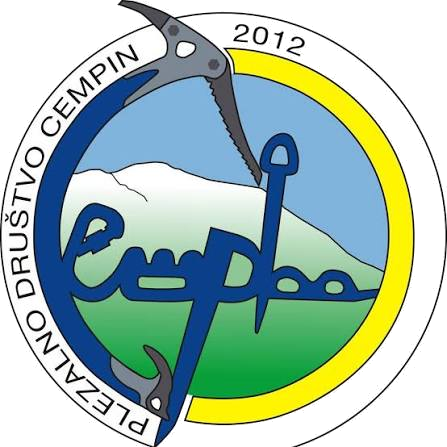
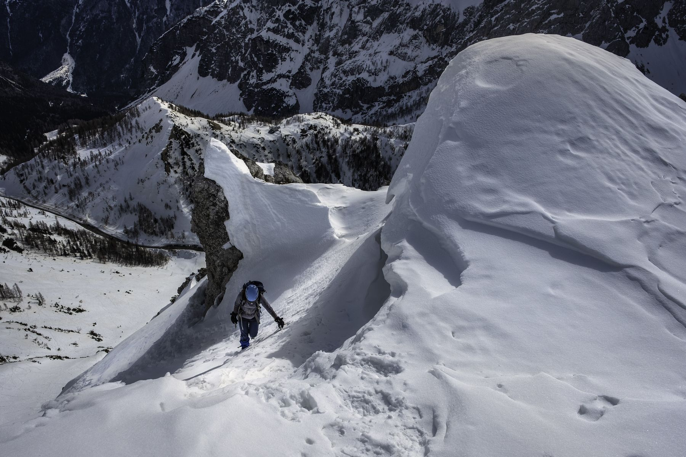
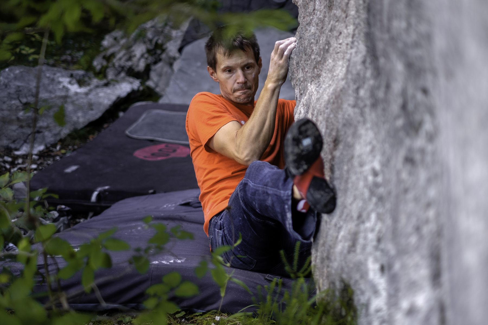
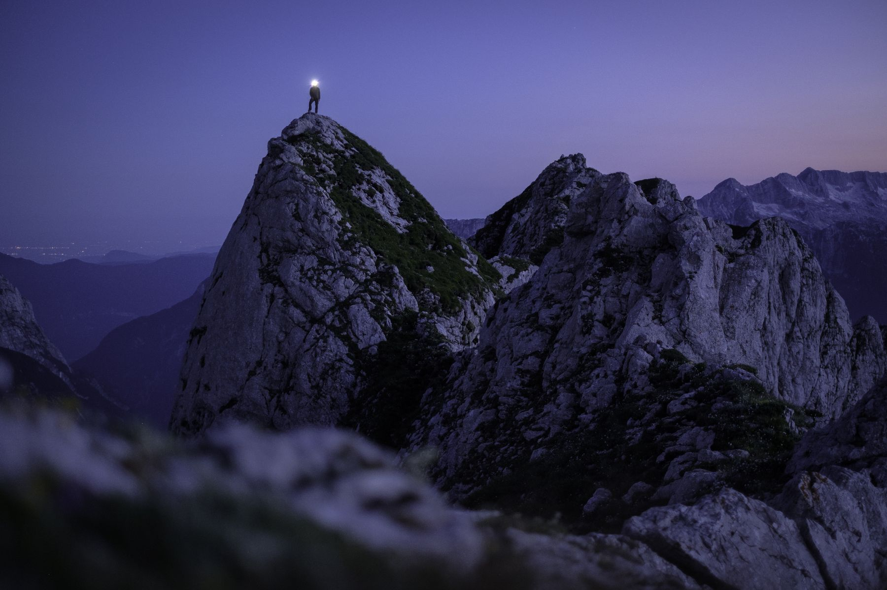
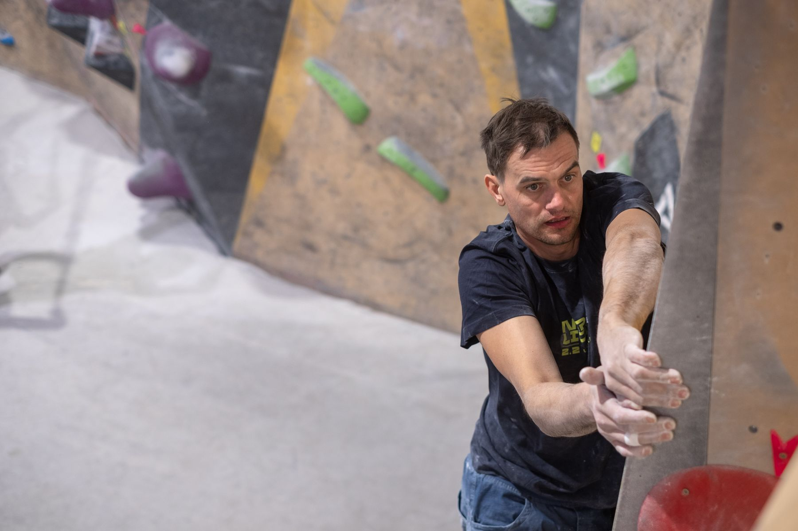

Plezalno društvo »Cempin«
Društvo iz Poljanske doline, ustanovljeno 10. oktobra 2012.

Ustanovitev društva
Naše društvo je sorazmerno mlado društvo. Ustanovljeno je bilo 10. oktobra 2012, z namenom da se združijo plezalci iz celotne Poljanske doline. Ti so v preteklosti odhajali v sosednja društva in klube, ker doma ni bilo možnosti organiziranega plezanja. Prvi ustanovitelji društva CEMPIN so bili Drago Frelih, Janez Špik, Jakob Stanonik in Cene Polajnar.
Pred nami je bila težka naloga, vse skupaj smo morali legalizirati na upravni enoti, kar ni bilo tako enostavno. Zakoni o društvih so ravno tako neizprosni, kot za ostale organizacije. Poleg tega smo želeli postati tudi polnopravni člani Planinske zveze Slovenije, saj želimo sodelovati z njihovimi podkomisijami. Take so na primer komisija za alpinizem, komisija za športno plezanje, komisija za vzgojo mladine, turno smučanje in turno kolesarjenje. Z vsemi naštetimi dejavnostmi se v našem društvu ukvarjamo.
V register o društvih so nas vpisali še isto leto in to prav za Miklavža tako, da pravimo, da nam ga je prinesel Miklavž. Zataknilo se je pri članstvu v Planinski zvezi Slovenije, saj gremo pri njih čez več sit. Tako smo morali pridobiti pozitivna mnenja od Meddruštvenega odbora Gorenjske in Komisije za športno plezanje, ti pa predlagajo Upravnemu odboru PZS sprejem novega društva kot polnopravnega člana. V decembru 2013 smo tako postali polnopravni člani tudi pri PZS.

Foto: Nejc TrpinAlpinistična šola, led in prve tekme
Veliko naporov je vodstvo vložilo v formalnosti, a novo moč nam so vlivali novi člani, ki so prihajali v društvo in prekipevali od želje po znanju in plezanju. Novi člani prihajajo, postajamo vedno številčnejši in vedno več jih je tudi pripravljenih poprijeti za delo.
Pričeli smo s prvo generacijo Alpinistične šole. Prostor za predavanja so nam posodili Poljanski gasilci in ga še vedno uporabljamo. Ostale infrastrukture za vadbo še nismo imeli, zato smo se hodili učit plezanja v Osp, Črni Kal in Vipavo. Zima nam je prinesla obilico snega in mraza zato smo v Žetini pridno vadili plezanje v ledu in nabirali potrebna znanja. Opravili smo več kot petnajst skupnih tur, tako letnih kot zimskih.
V februarju je bila organizirana hitrostna tekma v lednem plezanju, ki je štela za poljanski pokal. Tekme se je udeležilo lepo število plezalcev iz različnih klubov. V začetku marca je bil prvič organiziran turno smučarski reli iz Leskovice na Blegoš in nazaj v Leskovico. Še bolj kot z vremenom smo bili zadovoljni z udeležbo, saj se je tekme udeležila vsa slovenska reprezentanca. Res smo bili presenečeni in obenem že kar ponosni, kaj naše mlado društvo zmore.

Foto: Nejc TrpinPlezališče Podpečna
Prične se obdobje, kako našim članom nuditi ustrezne pogoje za vadbo in delo z mladimi. Organizirali smo dvodnevni plezalni tabor v Vipavi za osnovnošolsko mladino iz Poljan, pod vodstvom mentorice planinske šole Alenke Jelovčan in PD Gorenja Vas. Zgradili smo premično plezalno steno, ki nam služi za promocijo in vadbo otrok v poletnem času.
Z g. Cirilom Stanonikom smo se dogovorili za uporabo kamnoloma Podpečna, ki bi ga spremenili v plezališče. Ob naši nameri je bil navdušen. Pričela so se težka in nevarna dela, saj je stena kamnoloma bila precej zaraščena. Potrebno jo je bilo očistiti drevja, zemlje in nestabilnega kamenja. Tu smo se potrudili člani našega društva. S pomočjo traktorja, vitla in ročnega vlečenja jeklenice v steno, nam je uspelo steno grobo očistiti. Na vrveh smo steno očistili še bolj na fino, s pomočjo gasilcev pa smo steno še oprali.
Tu nas čaka še precej dela saj bi radi uredili podnožje stene in pristop. Potrebna bo obdelava s strojem, saj sami z ročnimi orodji tega ne zmoremo. Kljub temu nam je uspelo dve smeri opremiti s svedrovci in varovališči.

Foto: Nejc TrpinDoma in v tujini
Čez poletje se je prva generacija pripravnikov alpinistične šole že spopadala z velikimi stenami doma in v tujini. To so npr. Triglavska severna stena, Velika Mojstrovka, Nad Šitom glava, Velika Baba ipd. in tujina Paklenica in Arco.
Pričela se je vadba otrok v športnem plezanju. Ena skupina mladih že nabira izkušnje pod vodstvom mentorja. Z vadbo smo začeli na premični stenci in v plezališču Podpečna. Primanjkuje nam vaditeljev in trenerjev športnega plezanja. V prihodnje bomo namenili velik poudarek izobraževanju kadra v našem društvu.

Foto: Nejc TrpinUmetna plezalna stena
Tudi deževna jesen in zima nam ne bosta mogli preprečiti našega dela. Pričeli smo razmišljati o izgradnji umetne plezalne stene, kar je velik finančni zalogaj. Pričeli smo z iskanjem lokacije za izgradnjo stene. Razgovori so obrodili sadove v Kulturnem domu v Poljanah. Ideja je zrasla na Klinčevem zelniku, tudi g. župnik Jože Stržaj je privolil, saj kulturni dom stoji na župnijskem svetu.
Pogovori so potekali tudi med predsednikom KS Tonetom Debeljakom in kulturnim društvom. Slednji niso bili najbolj navdušeni, kar je čisto razumljivo z njihove strani, saj ni enostavno spustiti pod streho ljudi, ki se ne ukvarjajo s kulturo. Imamo malce drugačno planinsko kulturo. Z naporom predsednika KS smo našli kompromis in pravila napisali na papir. Sklenili smo pogodbo za najem prostora do leta 2020.
Z veliko prostovoljnega dela naših članov in pomoči ostalih simpatizerjev našega društva nam je v novembru uspelo postaviti plezalno steno. Čaka nas še težka naloga, steno moramo namreč opremiti z oprimki. Mogoče nam jih bo pa spet prinesel Miklavž.
Plezalno društvo Cempin je zaživelo v prostoru Poljanske doline, saj nam ljudje prisluhnejo in priskočijo na pomoč kjer koli se pojavimo. Ne nazadnje društvu dajejo življenje člani, brez članov in članic bi bilo društvo mrtvo. V tem društvu član s ponosom izgovori besedo CEMPIN. Še naprej se bomo trudili po začrtani poti, ki smo si jo zastavili. Predvsem pa bomo gojili etiko, ki nas zavezuje po kodeksu Planinske zveze Slovenije.
Drago Frelihpredsednik društva Cempin